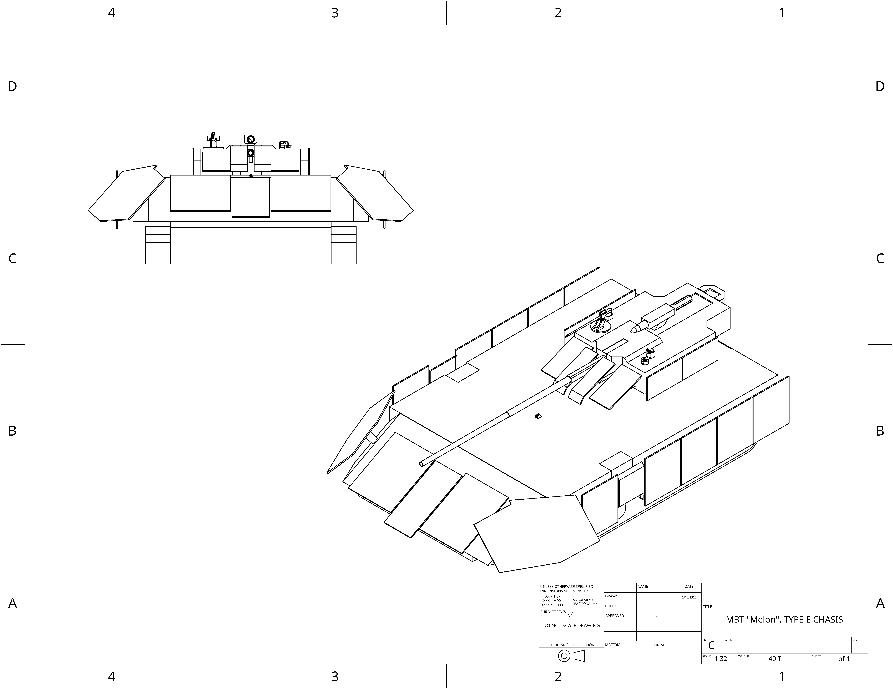

home
ECC MBT:
ECC main battle tank, utilizes hyper velocity capable 150mm missiles as its main armerment, paired with a 76mm
electrochemicalthermal autocannon and roof mounted .50 caliber machine gun. The spaced armor skirt surrounding
the vehicle primarily act as whipple shields to counter the various high velocity weapons employed by the UCSC.

- Main armament: ECC 150mm Guided missiles (Casaba)
- Secondary armerment:ECC L55, 76 ETC (Sabot, HE-VT)
- Secondary armerment: .50 roof mount
- Shielding capabilities: X1 GiggaJoules
- Auxillary capabilities: Carbyne laminent whipple shields
- Armor(Hull): Front-2400mm,Sides-400mm,Back-90mm
- Speed: 110 Kph Forward 110 Kph Back
- Tonnage: 40 Metric tons